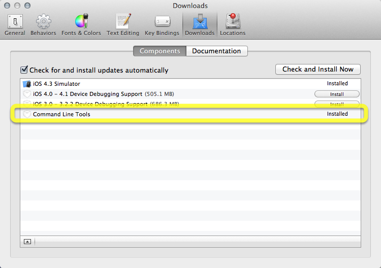

Introduction to Computer and C programming
November 17th 2014
What is programming language?
What is C programming?
Installation for Mac and Window
The very first thing you need to do, before starting out in C, is to make sure that you have a compiler. What is a compiler, you ask?
A compiler turns the program that you write into an executable that your computer can actually understand and run.
For mac user: you must now manually install command line tools from Xcode menu > Preferences > Downloads.

For text editor, We are going to use TextMate.
First program - Hello world!
#include <stdio.h>
/**
* Every C programming starts with main function
* and always return 0 at the end.
*/
int main(int argc, char * argv[])
{
// The printf function display "Hello world!" to the screen
printf( "Hello world\n" );
return 0;
}
Compile your code with gcc:
$ gcc -g -Wall helloWorld.c -o helloWorld
Then run it:
$ ./helloWorld